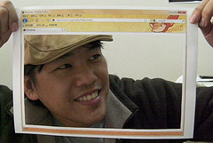

Personas: So what’s your style? 把你的臉放進這裡來！

"Bob Chao + Foxmosa Sunny Day"
步驟
使用
Firefox 3.6
，到
GetPersonas
換上你最喜歡的個性面板。
開啟這個網頁，然後抓下整個 Firefox 的介面抓圖。
將剛剛抓下的圖列印在 A4 的紙上，記得盡可能地填滿紙張！
沿虛線剪下中央這個區塊並去除。
將剩下的外框舉起，Firefox 介面朝外、中央的洞口對著你的臉，接著請別人拍張照。
將拍好的照片上傳到網路相簿與全世界分享！別忘了加上
personas
標籤。
也可以將照片加入
Flickr 活動群組
或分享到
Firefox 臉書粉絲相片
。
記得與好友分享我們的
Your Firefox, Your Style
主題影片！